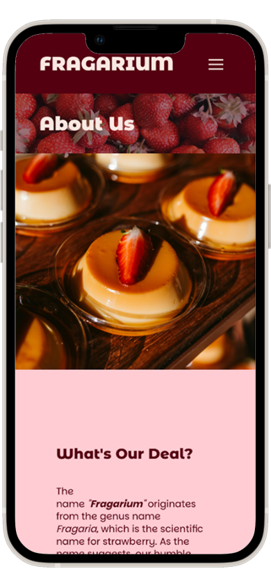
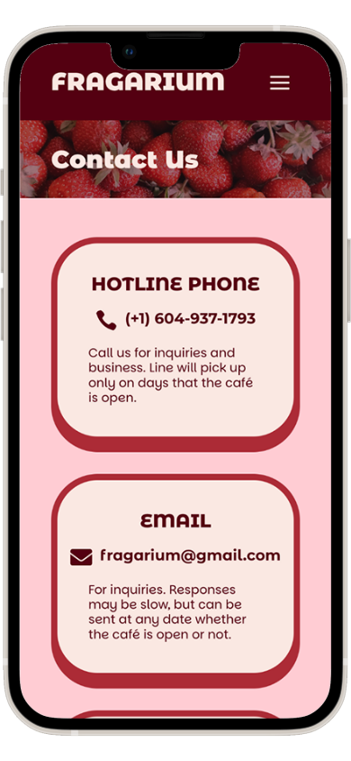
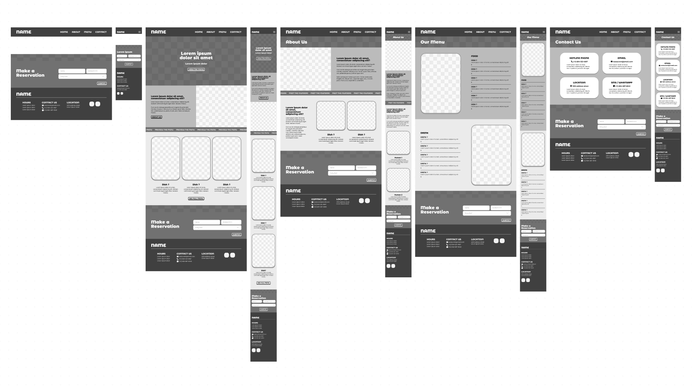
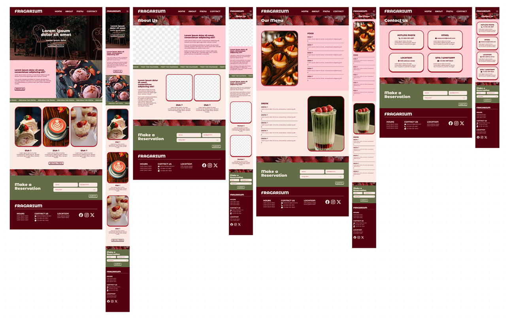
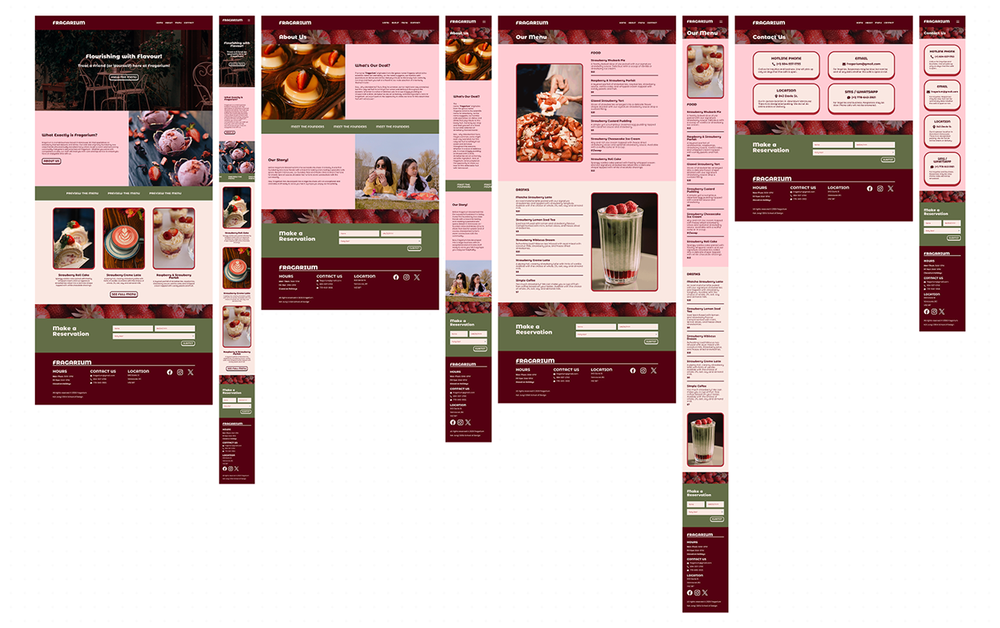
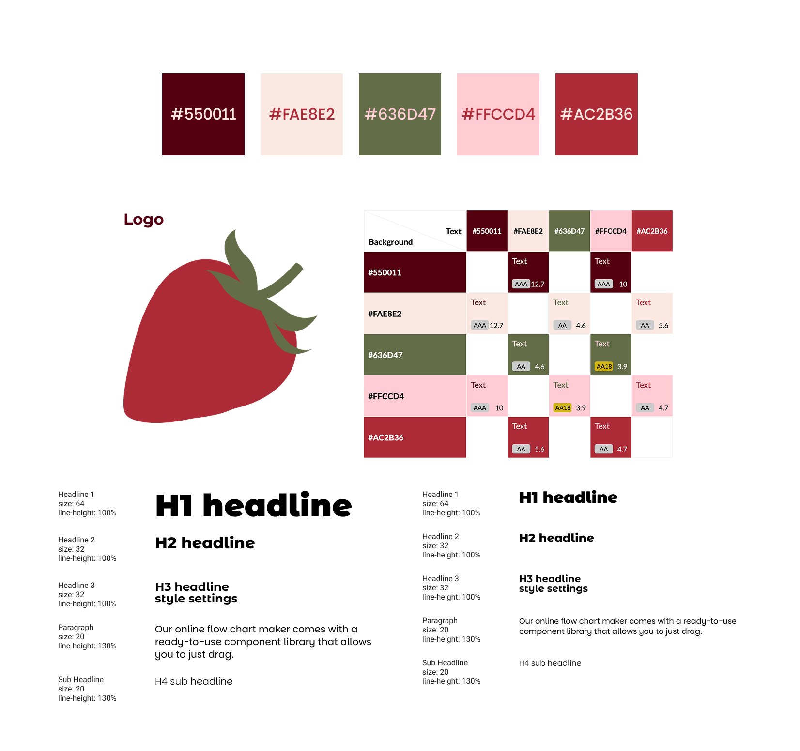
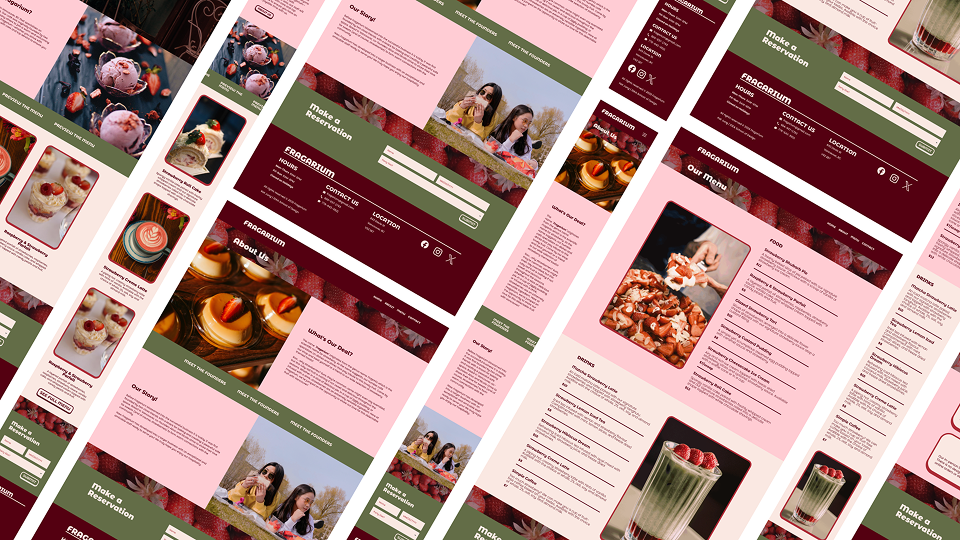

HOME PAGE
The home page of Fragarium gives viewers a sweet welcoming message to the website, encouraging visitors to explore the menu right off the bat. This ties towards the welcoming community Fragarium has built, facing people with a positive and open attitude. Scrolling down, viewers can read a blurb about the goal of Fragarium, and are prompted to learn more about the small business. Further down viewers will see a preview of the menu.
The footer on each page of the website features a Make a Reservation form, encouraging visitors to visit to visit the café. The usage of a simple yet vibrant colour palette, remininiscent of the loved strawberry fruit, create a natural and sweet interface tailored for all users.

ABOUT
The About page features a information about the goals, values, and founders of Fragarium. The writing style of Fragarium comes off as friendly and human, making users feel welcomed as if talking to a real person.

MENU
The Menu page features two animated gifs which feature the food & drink menu of Fragarium. Both were created in Adobe Photoshop. The layout of this page is simple yet easy to understand, through the use of colour and textual hierarchy.

CONTACT
Lastly, the Contact page features information regarding all the ways Fragarium can be contacted — through phone, email, text, or at its in-person location.

Ideating & Design Process
Low Fidelity Wireframes

HEADER & FOOTER → HOME → ABOUT → MENU → CONTACT
High Fidelity Wireframes

Showcase of high fidelity wireframes for all desktop and mobile pages
Final Web Version

HOME → ABOUT → MENU → CONTACT
Style Guide
Fragarium's colours consists of greens, reds, and pinks, which are remininiscent of the strawberry this café is based around. A deep red and light cream colour serve as replacements for the typical pure black or white, typing everything together with a consistient and coherent palette. The typography is sleek and simple, but still has a playful twist with its stylized shapes and fun angles.
The logo of Fragarium is a simple strawberry, built using Adobe Illustrator.

Reflection
What I Learned
I used WordPress for the first time for this project. To be completely honest, using WordPress was very draining; getting familiar with the large variety of functions & settings caused me to feel confused and frustrated many times while working on this website.
Despite the struggles I experienced during this project, I did in fact learn a valuable lesson. I learnt how difficult coding can be — but I also learnt how to improve and grow through every mistake I made. Comparing WordPress to raw coding through html and CSS, I find myself preferring the latter; but with this experience, I find myself better prepared to do either.
This project also allowed me to further develop my design skills, since this entire website, from its colours, layout, and typography were created from scratch using my own ideas and creative mindset.
